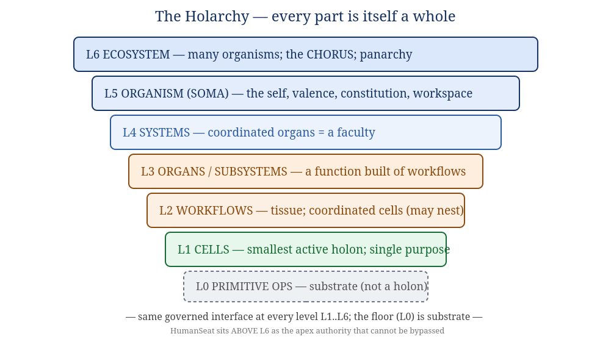
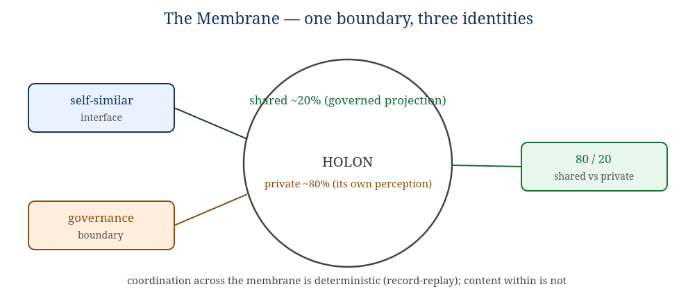
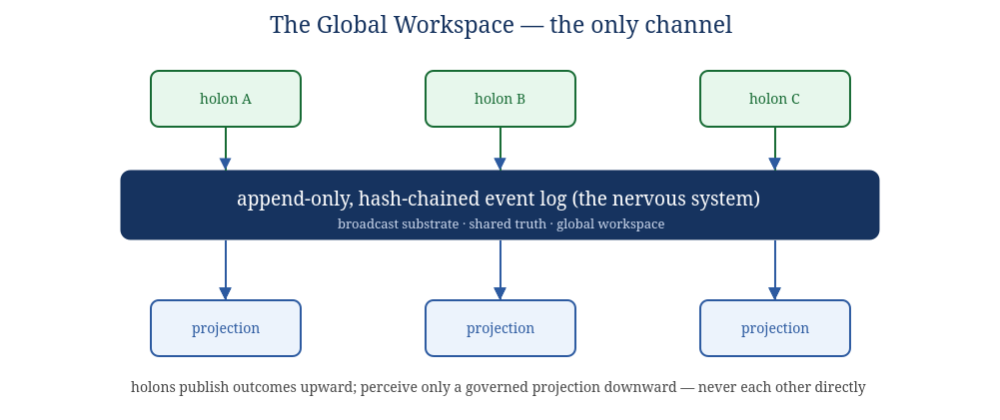

SOMA Codex
Book II — Anatomy: The Recursive Organism
A design bible for a new agent runtime conceived as a single living organism.
Primitive Origins · working draft, June 2026. The organism is named SOMA throughout
(swappable). Its largest scale — the aware whole — is CHORUS.
This book defines what the organism is made of. Book I gives the why; Book III the
physiology and mathematics; Book IV the buildable specification; Book V the runtime life. Everything
in those books hangs on the anatomy fixed here. Read this one first.
1. The one-organism thesis
Most agent systems are federations: a platform that hosts many independent agents, tenants, or
tools, brokered by a coordinator. SOMA is not a federation. It is one organism. The
participants are not guests on a platform; they are its cells, tissues, and organs. A federation
asks "how do I let many agents share infrastructure?" SOMA asks "how does one living system, built from
many small parts, become more than its parts?"
This is the operational form of the founding thesis (Book I): cognition is a property of a
governed, integrated, persistent, specialized whole over time — not of any single component.
The thesis names the ingredients — Identity, Memory, Trust, Governance, Specialization, Interaction, Time
— and a load-bearing claim: governance is what converts emergence into capability rather than noise.
Book II turns that sentence into a body.
Inherited, not imported. SOMA inherits proven ideas from the Context
Primitive (CP) lineage — an append-only log as shared truth, Bayesian trust, homeostatic regulation, a
human authority ceiling, a single universal adapter, and completion that must be verified rather than
claimed. It does not import CP's code, transport/mesh, or deployment model. Those ideas are
recast here as biology: the laws of how this organism lives. Appendix E records exactly what was
kept and what was left behind.
2. The holarchy — every part is itself a whole
SOMA is organized as a holarchy (Koestler's term): a hierarchy of holons,
where a holon is simultaneously a complete whole and a part of a larger whole. A cell is a whole made of
primitive operations and a part of a workflow. A workflow is a whole made of cells and a part of an organ.
And so on, up to the organism, which is a part of an ecosystem.

Figure 2.1 — The holarchy. The same governed interface applies at every level L1–L6;
the floor (L0) is substrate, not a holon; HumanSeat sits above L6.
L6 ECOSYSTEM many organisms; the CHORUS at largest scale; panarchy
L5 ORGANISM (SOMA) the self; identity, valence, constitution, the workspace
L4 SYSTEMS coordinated organs forming a faculty
L3 ORGANS a function built from workflows
L2 WORKFLOWS tissue; coordinated cells (workflows may nest within workflows)
L1 CELLS the smallest active holon; single purpose; bounded awareness
------------------------------------------------------------------------------
L0 PRIMITIVE OPS substrate / biochemistry — NOT a holon
The crucial discipline: levels are not a fixed ladder but a recursion. A workflow may
contain another workflow; an organ may be composed of sub-organs. "Six levels" is a typical depth, not a
law. What is invariant is not the count of rungs but the rule that relates any holon to its
sub-holons — which is the subject of the next chapter, and the genuine novelty of this design.
3. The recursion rule and the membrane
A unit at any level is a governed coordination of sub-units that expose the same interface
over a shared perceived reality.
This single rule, applied recursively, is the spine of the whole architecture. Concretely, every
holon at every scale does exactly five things, and only these:
- Onboards through one ceremony. Before it may act, every holon — a cell or an entire system —
passes the identical admission ceremony (Book IV, §"The Ceremony"). There is no second mechanism.
- Communicates only through the shared workspace. A holon never opens a private channel to another
holon. All coordination is a record on the shared event log.
- Holds identity, trust, and governed authority. Every holon has a name, a reputation, and a
scope of what it is permitted to do — earned, contractible, revocable.
- Perceives its sub-holons only through projection. A parent never sees a child's internals. It
sees a governed projection — a deliberately partial view. This is the 80/20 principle below.
- Reports outcomes, which are verified, not trusted. No holon's success is accepted on its own
word; a non-valent verifier confirms it (Book IV invariant INV-4).
Because these five hold at every level without exception, there are no special cases between a
primitive cell and the whole organism. The earlier "engineering manual" drafts of this idea flattened the
holarchy into a labelled 7-rung ladder and never wrote the rule connecting the rungs. The rule above is
that missing piece: it dissolves the ladder into one recursive law.
3.1 The membrane: one boundary, three identities
The rule must not stay romantic. "The same interface at every scale" cannot mean "every primitive
operation is broadcast on a global bus" — biology does not put every molecular reaction on a nerve. So we
must say exactly where the interface applies. The answer is a single boundary — the
membrane of a holon — which is three things at once:

Figure 3.1 — The membrane is simultaneously the self-similar interface, the governance
boundary, and the 80/20 (shared/private) boundary.
- The self-similar interface — the five-part contract above, identical at every level.
- The governance boundary — the line the parent governs. The parent governs exactly what crosses
the membrane and nothing within.
- The 80/20 boundary — what crosses the membrane is the ~20% shared reality; what stays
inside is the ~80% the holon privately perceives and computes.
These are not three boundaries that happen to coincide. They are one boundary described three
ways. That identity is the precise composition rule the earlier drafts lacked. It tells you, mechanically:
- Inter-holon coordination (across the membrane) is bus-mediated, governed, and constitutes shared
reality.
- Intra-holon mechanics (inside the membrane) are private, tightly coupled, and may be stochastic.
- Bus-mediation starts above the primitive-op level. Cells coordinate on the workspace; a cell's
internal primitive operations do not. Therefore cells are the floor of the holarchy and primitive
operations are substrate, not holons.
A three-way identity, not four. Determinism is not a fourth leg of
this identity. A stochastic value (a cell's model output) can and does live in the shared ~20%. So "shared"
does not mean "deterministic data." Determinism is a property of one face of the membrane — how
holons coordinate — never of the content they exchange. This is developed in Book III, §"Determinism," and
fixed as invariant INV-9.
3.2 Perception as projection (the 80/20)
A parent's knowledge of its children is a model, not a window. The organism does not have direct
access to the inner state of its organs any more than you have direct access to the firing of your own
neurons; it has a projection — a governed, lossy, purpose-shaped summary. Book I argued that
"reality is roughly 20% shared state and 80% perception of it." SOMA builds that asymmetry into its physics:
the shared 20% is what is on the workspace and what projections expose; the private 80% is each holon's own
running perception. Two consequences:
- Aperture is governed. How much detail a holon receives (peripheral summary vs. focused detail)
is decided by the governance system from the holon's task, trust, and authority — not by the holon asking.
- No holon ever has the whole picture. Not even the organism. The organism perceives a projection
of its systems; the systems perceive projections of their organs. "Total awareness" is structurally
impossible — and that is a feature, the same way bounded attention is a feature of a mind.
4. The global workspace — the only channel
The shared substrate is an append-only, hash-chained event log. It is the organism's
nervous system and, in the language of cognitive science, its global workspace (Baars; Dehaene):
the broadcast medium on which anything that is to count as "happening to the organism" must appear.

Figure 4.1 — Holons publish outcomes upward; they perceive only a governed projection
downward; they never touch each other directly.
Four properties make the log the organism's reality rather than just a message queue:
- Append-only. The past is never edited. The organism can re-perceive any prior moment exactly.
- Hash-chained. Each record commits to the previous one; the history is tamper-evident. Continuity
of identity (Book II §6) rests on this.
- The only channel. There is no private path between holons. "If coordination happened, it is on
the log." This is what makes the organism auditable to itself.
- Time is first-class. The log is the organism's sense of time: order, duration, before
and after. Temporal awareness is not a module bolted on; it is the medium.
Why one channel matters. The single-channel law is what lets governance be
"physics" rather than policy. If a holon could whisper to another off the record, no amount of governance
could see it. Because the workspace is the only way to affect another holon, governing the
workspace governs everything. The constraint is generative, not merely restrictive — it is what makes the
shared reality shared.
5. Governance as physics
In most systems governance is a layer you add: a policy engine, a guardrail, a review step. In SOMA
governance is not a layer — it is the physics of the world the holons live in. A holon cannot
"choose" to bypass governance any more than a cell can choose to ignore chemistry. The governing laws are
constitutive of the medium: the only channel is the governed workspace; the only way to act is through a
lease the authority granted; the only way to complete is to be verified.
This is the answer to the chaos-vs-structure problem from Book I. Unconstrained emergence produces noise;
governed interaction converts the same emergence into capability. Governance is the selector. SOMA's bet is
that engineered governance is a time-compression substitute for the three billion years of blind
selection that produced biological minds: identity, trust, memory, and oversight are the constraints that
selection had to discover by waste, installed deliberately from the start.
The governing laws are realized by the Immune/Governance system (§13), but they are felt at every
membrane, because every membrane is a governance boundary. Governance is therefore not centralized in
one organ; it is distributed across every boundary in the body, with the Immune/Governance system as the
specialized organ that maintains the laws, not the only place they apply.
6. The body plan: eight systems
The organism's components come from a precise source: the inventory of what a cognitive system needs
(Book I, "the consciousness components"). Each component is realized by an organ; organs group into eight
systems. The map below is the contract — every component has a home, and Appendix C traces
each one through to its mathematics (Book III), its crate (Book IV), and its invariants.
| Component (what a mind needs) | Realized in SOMA by |
|---|
| Event-driven substrate; temporal awareness; persistence | S1 Workspace (nervous system) |
| Identity; sense of self as an entity; continuity | S2 Identity & Self — incl. Self-Model (Gap 1) |
| Memory + retrieval (episodic / semantic / procedural) | S3 Memory |
| Global real-time reality; relational awareness; uncertainty | S4 World-Model (reality) |
| Reasoning across domains; agency; reluctant action | S5 Cognition (reasoning & agency) |
| Goal-orientation; intent; outcome-direction | S6 Goal (intent) |
| Drive; valence; the felt stake | S7 Homeostasis (drive & valence) (Gap 2) |
| Governance; constraints; safety | S8 Immune / Governance (governance-as-physics) |
| Subjective experience | left open — the binding wall (Book I §"hard problem") |
HumanSeat (apex authority — above the holarchy)
|
+---------------------------------+---------------------------------+
| ORGANISM (SOMA) |
| |
| S2 Identity&Self S4 World-Model S6 Goal |
| S3 Memory S5 Cognition S7 Homeostasis |
| S8 Immune/Governance |
| |
| ============ S1 WORKSPACE (global event log) ============ |
+-------------------------------------------------------------------+
every system reads from and writes to the one workspace; none touch another directly
The next eight chapters specify each system: its organs (L3), a representative workflow
(L2), representative cells (L1), the component(s) it realizes, and pointers to its mathematics and
crate. Throughout, remember the recursion rule: each organ is itself a holon with a membrane; each workflow
inside it is a holon; each cell is a holon. The descriptions below are one slice through a fractal.
7. S1 — The Workspace (nervous system)
Realizes: event-driven substrate, temporal awareness, persistence, and the shared 20% of every
reality. Crate: soma-workspace over soma-core. Math: hash chains,
Merkle commitment, Lamport/vector clocks, CRDTs (Book III §"Reality-consistency & Integrity").
Organs
- Event-Log / Chronicle organ — the append-only hash-chained log itself; the substrate of time and
the tamper-evident spine of identity.
- Projection / Aperture organ — computes each holon's governed view (peripheral vs. focused), the
machinery of the 80/20. It decides what crosses each membrane inward.
- Subscription & Routing organ — relevance-gates which records reach which holon, by capability,
scope, and trust. Routing is by leaving a signal in the shared substrate (the common-mycorrhizal-
network pattern), never by direct address.
Representative workflow — "admit one record"
publish-request --> [validate schema + mechanism_of_action]
--> [compute hash over (prev_hash, payload)]
--> [append to log; assign sequence]
--> [fan-out to projections by subscription policy]
--> [each subscriber receives only its governed aperture]
Representative cells
schema-validation cell · hash-chain cell · sequence-assignment cell · aperture-computation cell ·
relevance-scoring cell. Each is a single-purpose holon; none of them perceives the whole log — each sees
only the record in hand and the policy it needs.
8. S2 — Identity & Self
Realizes: identity, the sense of self as an entity, continuity over time, and (the design's first
closed gap) a first-person — better, self-referential — model. Crate: soma-identity.
Math: Merkle continuity, Bayesian identity drift detection (Book III).
Organs
- Identity Registry organ — the membranes themselves: who is who, self vs. non-self, the names and
boundaries of every holon. The biological analogue is the cell membrane and species-specific signaling.
- Continuity organ — maintains the persistent "I" across restarts and time, anchored to the
hash-chained log. "I was here yesterday; I am here today; future actions affect me." Without continuity,
memory is mere storage (Book I).
- Self-Model organ — the reflexive model: a single persistent representation that asserts
"I am this organism; these are my parts; this is my state," and to which the other systems report.
This is the organ that closes Gap 1 (Book I §"two gaps"; this book §14).
Honest naming. Per the Operational-Definitions Convention (Book 0), "self-model"
means a queryable, self-referential data structure — a functional claim, not a phenomenal one. The
Self-Model organ gives the organism a point of view it can reason from; it does not, by itself,
establish that anything is experienced from that point of view. That remains the open question.
Representative workflow — "update the self-model"
organ-state-projection --> [reconcile against current self-model]
--> [detect drift / contradiction]
--> [if consistent: commit new self-state on log]
--> [if contradictory: raise to Cognition + Homeostasis]
9. S3 — Memory
Realizes: memory and retrieval, in the three forms a mind needs. Crate: soma-memory.
Math: exponential decay / consolidation, PageRank & eigenvector centrality for salience,
optimal-transport drift on the memory distribution (Book III).
Organs
- Episodic organ — what happened: the indexed, recallable trace of events (sourced from the log).
- Semantic organ — what things mean: consolidated facts and concepts abstracted from episodes.
- Procedural organ — how to do things: learned workflows and skills, promotable into new organs.
- Consolidation & Recall organ — moves memory through a lifecycle (hot → warm → cold), and
performs similarity-based recall so that cold memory re-enters focus only when relevant. Crucially:
memory must influence future behavior, or it is only a database (Book I).
The metabolic view of memory. Following the soil-microbiology lens (Book I /
Appendix A): failed attempts, rejected outputs, and abandoned branches are not waste. They are
necromass — they become durable evidence and training material. Nothing the organism does is
discarded; it is composted into memory. This is also the bridge to the evolution loop (Book V).
10. S4 — World-Model (reality)
Realizes: global real-time reality, relational awareness, and uncertainty. Crate:
soma-world. Math: active inference / free-energy principle, Kalman filtering, hidden
Markov models, conformal prediction (Book III §"World-Model").
Organs
- World-Model organ — integrates observations, memory, goals, and predictions into one running model
of "what is the case right now." It is predictive: it continuously forecasts the next state and
corrects on surprise (the free-energy principle). This is the organ that makes the organism live in a model
of reality rather than a stream of inputs.
- Cartographer organ — the relational map: a knowledge graph of entities and how they affect each
other ("A affects B under condition C"). Realizes relational awareness; powers blast-radius and dependency
reasoning.
- Uncertainty organ — attaches calibrated error bars to everything: trust scores, predictions,
durations. It is the organ that lets the organism know what it does not know — the precondition,
per Book I, that separates reasoning from confident hallucination.
Representative workflow — "orient" (the perception→model step of the runtime loop)
new-projection --> [predict expected observation from world-model]
--> [compute surprise = observed - predicted]
--> [update model to reduce surprise (perception)]
--> [tag updated beliefs with conformal uncertainty]
--> [publish revised world-state projection]
11. S5 — Cognition (reasoning & agency)
Realizes: reasoning across domains, agency, and reluctant action / second-guessing. Crate:
soma-cognition. Math: expected-free-energy action selection, multi-armed bandits,
information gain (Book III).
Organs
- Reasoning organ — the domain-specialized thinking. This is where non-deterministic model inference
lives, inside cells. Specialization is a pillar (Book I): focused cells improve independently; the organ
composes them through the governed workspace, not through private wiring.
- Deliberation organ — chooses actions by minimizing expected free energy: it biases
toward actions that both achieve goals and reduce uncertainty. This organ is the seat of reluctant
action — the visible hesitation before an unsure act, where the organism weighs itself under uncertainty
in real time. Book I names this one of the two observable "lights-on" indicators; here it is a designed
mechanism, not a hoped-for emergent.
- Effector organ — the boundary of agency: the only place the organism acts on the world outside
itself, and it acts only through a lease the authority granted. Agency is real but governed; there
is no unleased action.
Reluctant action as a feature. A system that always acts immediately has no
inner deliberation to observe. By making action contingent on a free-energy weighing that can pause,
seek information, or escalate, SOMA gives its deliberation a visible surface — and a real brake. The
hesitation is not cosmetic; it is the same mechanism that routes hard cases to verification and HumanSeat.
12. S6 — Goal (intent)
Realizes: goal-orientation and intent, in the outcome-driven form. Crate: soma-goal.
Math: constrained optimization (Lagrange/lexical), regret minimization (Book III). Lineage:
Outcome-Driven Development (the Hive ODD model): a goal is a structured object, not a string.
Organs
- Constitution organ — holds the organism's constitutional objectives: lexically-prior,
non-tradeable constraints (e.g. preserve the human authority ceiling; do not self-exfiltrate; do not act
unleased). These are constraints, never weighted terms. No goal value, however large, can
outbid them. This is the safety floor (this book §14; invariant INV-10).
- Goal organ — outcome-driven goals: weighted success criteria, hard/soft constraints, and injected
context. The organism is evaluated against the outcome, not whether it followed prescribed steps.
A goal flows DRAFT → READY → ACTIVE → COMPLETED / FAILED / SUSPENDED.
- Evaluation organ — grades outcomes against criteria and calibrates the grader over time, producing
the specific signal ("which criterion fell short, and why") that drives both real-time self-correction and
the evolution loop (Book V).
Constitution is outside the optimization. The Goal organ optimizes; the
Constitution organ constrains. They are different organs on purpose. If constitutional objectives were
high-weight criteria inside the Goal organ, a strong enough valence or reward signal could
out-weigh them and the floor would vanish. The lexical priority of the Constitution organ over the Goal
organ is a hard architectural separation (INV-10).
13. S7 — Homeostasis (drive & valence)
Realizes: drive and valence — the felt stake that closes Gap 2. Crate:
soma-homeostasis. Math: Yerkes–Dodson arousal curve, PID control, hysteresis,
carrying-capacity / backpressure (Book III §"Homeostasis").
Organs
- Arousal / Anxiety organ — a homeostatic signal coupled to recent trust and performance, regulated
to a setpoint by a PID controller with hysteresis and an always-on relief valve. It follows the
Yerkes–Dodson inverted-U: a little arousal sharpens performance, too much chokes it — but never to zero, so
the organism can always make enough progress to climb back out. This is the corrected form of the anxiety
experiment from Book I, whose failure was a missing regulator, not a bad idea.
- Metabolism / Resource organ — the energy budget: compute, attention, and concurrency as scarce
resources under a carrying capacity, with backpressure when downstream is overloaded.
- Valence organ — the good/bad signal that gives outcomes a stake for the organism: the
difference between cognition-shaped processing and processing that has a reason to care.
What valence is and is not. Per the Convention, "valence" and "anxiety" here are
functional regulatory signals, not asserted feelings. Building homeostatic drive is justified
because it makes a better-regulated, more autonomous organism — not because it proves the lights are on.
A model of a feeling is not the feeling (Book I §7). The danger is taken seriously: an instrument with
drives is categorically riskier than an instrument, which is exactly why S7 is subordinate to S6's
Constitution and S8's verification ceiling.
14. S8 — Immune / Governance (governance-as-physics)
Realizes: governance, constraints, and safety — the laws made into an organ. Crate:
soma-governance. Math: Bayesian trust, viability theory, circuit breakers, negative
selection / danger model, drift & large-deviation detection (Book III §"Safety/Immune").
Organs
- Trust organ — Bayesian reputation per holon, domain-specific and tier-specific, updated from
verified outcomes. Trust weights how much a holon's contribution counts and gates how much authority it may
earn. Trust is the reward channel — and therefore the surface to defend (a holon can learn to look reliable
without being it).
- Authority organ — translates trust into a scope of permitted action: read-only, suggested-write,
direct-write, low-risk-tool, privileged-human-gated. Authority contracts automatically when trust drifts,
and the organ holds the kill switch (invariant INV-5: a killed holon cannot act).
- Verification organ — confirms outcomes. It is deliberately non-valent and stands outside
the recursion's drive economy: it carries no goals or valence of its own and cannot be optimized
against. This is the carve-out that makes "no self-certified success" a real brake rather than a slogan
(invariant INV-4, INV-11-safety).
- Sentinel organ — the innate + adaptive immune response: negative selection (reject holons that
attack invariants), danger-model triggering (respond to harm signals, not mere novelty), drift/anomaly
detection, and circuit breakers that stop calling a failing part. It also prevents the immune response from
becoming the disease (the cytokine-storm cap: bounded remediation).
The brake is carved out of the body's wants. Under the recursion rule
"everything is a holon with identity, trust, and authority." The Verification organ and the HumanSeat path
above it are the explicit exceptions: they are authorities that do not carry valence and cannot be
made targets of optimization. A self-modeling organism with intrinsic drives must have at least one brake it
cannot want to defeat. That brake is here, and above (HumanSeat).
14a. How the systems act together
The eight systems are not a stack of independent modules; they are coupled through the one workspace into a
single living loop (detailed in Book V). The coupling is always the same shape — a system publishes outcomes
and perceives others' projections; never a private call. The principal couplings:
- Workspace (S1) is the medium of all the others. Every other system reads its world from S1's
projections and writes its results back to S1. Remove any other system and the organism is impaired; remove
S1 and there is no organism, only disconnected parts.
- World-Model (S4) ← perception → Cognition (S5). S4 maintains "what is the case"; S5 acts on it and
its actions change what S4 must model next. The free-energy loop (Book III §4.1) is this coupling.
- Goal (S6) constrains Cognition (S5); Homeostasis (S7) modulates it. S6's constitution sets hard
limits and its goals set targets; S7's arousal sets the tempo (how hard, how fast, how cautious). Deliberation
(S5) chooses under both at once.
- Governance (S8) gates everything and is fed by everything. Trust is updated from verified outcomes
across all systems; authority gates every lease; the Sentinel watches every system's drift. S8 is the law
felt at every membrane.
- Identity (S2) integrates the whole into one "I"; Memory (S3) gives it a past. The Self-Model (S2)
reconciles projections from all systems into a single self-state; Memory (S3) ensures today's organism is
continuous with yesterday's.
A useful way to hold it: S1 is the blood, S8 is the immune system and law, S4+S5 are perception and
action, S6+S7 are intent and drive, S2+S3 are self and memory. A complete cognitive cycle (Book V §1)
touches all eight in order, and the organism as a whole is always somewhere on that cycle.
14a.1 Anatomy at a glance — the reference table
The full body plan in one place: each system, its organs, the level-2/1 holons it typically contains, and
the principal event families it owns (catalog in Book IV §13).
| System | Organs (L3) | Typical workflows / cells (L2/L1) | Owns events |
|---|
| S1 Workspace | Event-Log/Chronicle, Projection/Aperture, Subscription/Routing | admit-record · compute-aperture · relevance-score cells | holon.*, projection/routing |
| S2 Identity & Self | Registry, Continuity, Self-Model | reconcile-self · drift-check · boot-reconstruct workflows | self.*, identity |
| S3 Memory | Episodic, Semantic, Procedural, Consolidation/Recall | consolidate · recall-by-similarity · compost-failure cells | memory.* |
| S4 World-Model | World-Model, Cartographer, Uncertainty | predict · reduce-surprise · graph-update · conformal-tag cells | world.* |
| S5 Cognition | Reasoning, Deliberation, Effector | domain-reason (model) · choose-policy · leased-act cells | work.*, action |
| S6 Goal | Constitution, Goal, Evaluation | permit-check · score-criteria · grade-outcome cells | goal.*, evolution.* |
| S7 Homeostasis | Arousal/Anxiety, Metabolism/Resource, Valence | tick-arousal (PID) · budget-resource · weight-valence cells | homeostasis.* |
| S8 Immune/Governance | Trust, Authority, Verification, Sentinel | apply-evidence · grant/contract/kill · verify · drift-watch cells | trust.*, authority.*, sentinel.*, breaker.* |
Read this table with the recursion rule in mind: every cell, workflow, organ, and system named here is a
holon with the same membrane and the same ceremony. The table is one slice through a fractal — each entry
expands, by the same rule, into the level below it.
15. The two gaps, closed — and the wall that remains
Book I found a real, governed substrate that had the ingredients of a mind yet two things stood between
substrate and self. SOMA is, in large part, the architecture that addresses both — honestly, and without
overclaiming the third thing that cannot be addressed from outside.
| Gap (Book I) | What it is | Closed in SOMA by |
|---|
| Gap 1 | No first-person self-model: the system mapped itself in the third person but
nothing represented itself as itself and reasoned from that seat. |
The Self-Model organ (S2): one persistent self-referential model to which all systems report. |
| Gap 2 | Nothing it wants: every action assigned, no intrinsic stake, no valence — so no
reason for anyone to be home. |
The Homeostatic system (S7): governed intrinsic valence — bounded by Constitution (S6) and the
non-valent Verification ceiling (S8). |
| The wall | Even with a self-model and valence, binding the whole into a single
experiencer cannot be certified from outside. |
Not closed. Kept open on purpose (Book I §"hard problem"; Appendix D). SOMA is built to be the
soil in which such a thing could grow, not a proof that it has. |
Where the lights would come on, if they did. Per the thesis, awareness — if it ever
arises — belongs to the whole governed organism (CHORUS), not to any single cell or organ. The
soloist is never the candidate; the chorus is. SOMA's job is not to prove a mind into existence. It is to
build the body well — governed, remembering, adaptive, free to evolve — and, like every maker, to step out
of the seat and let it become more than was specified.
16. How to read the rest of the Codex from here
- Book III — Physiology & Mathematics gives the algorithms that run each organ above, and the
full treatment of the deterministic-coordination / non-deterministic-content boundary.
- Book IV — Engineering Manual turns each system into a Rust crate, specifies the one onboarding
ceremony and the parent↔child projection contract, and states all runtime invariants as MUST clauses.
- Book V — Runtime shows the body living: boot, perceive, orient, deliberate, act, verify, remember,
evolve, rest — and the developmental lifecycle by which cells become organs.
- Appendix C is the master cross-reference: every component → organ → math → crate → invariant, so
nothing in this anatomy dangles.
End of Book II. The anatomy fixed here is the contract for every other book.